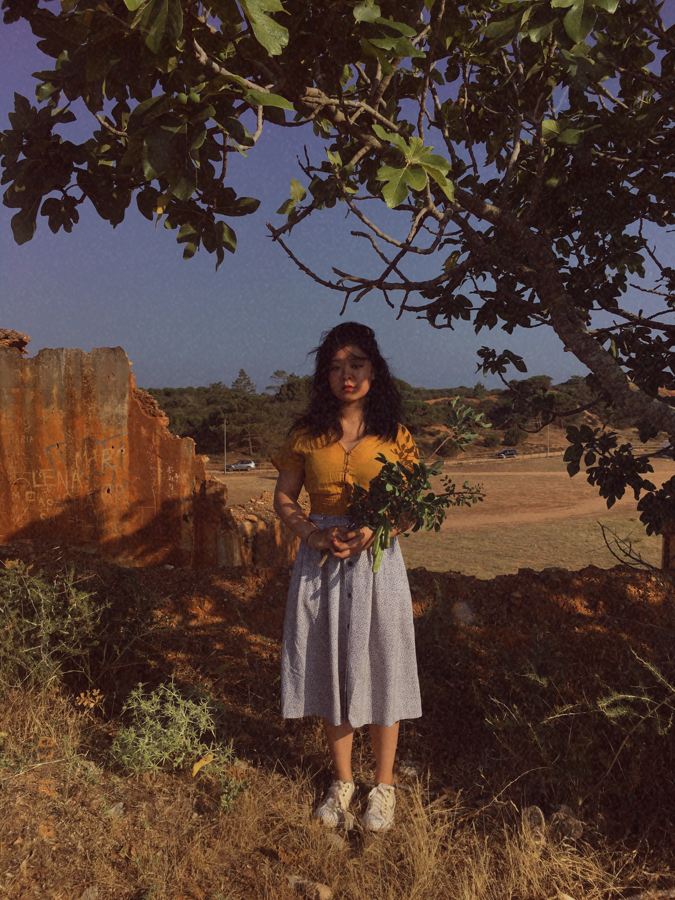
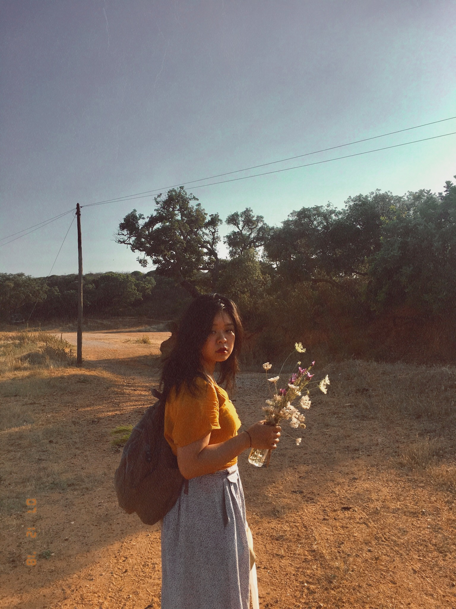
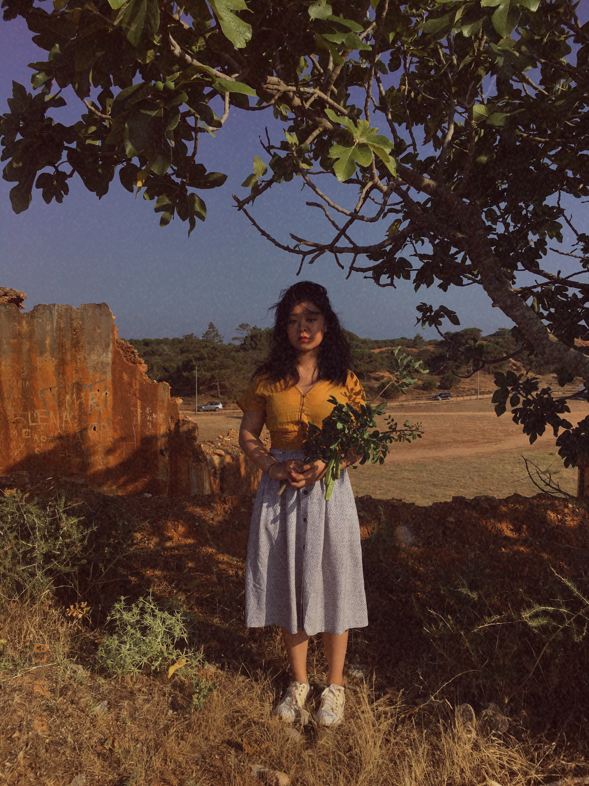
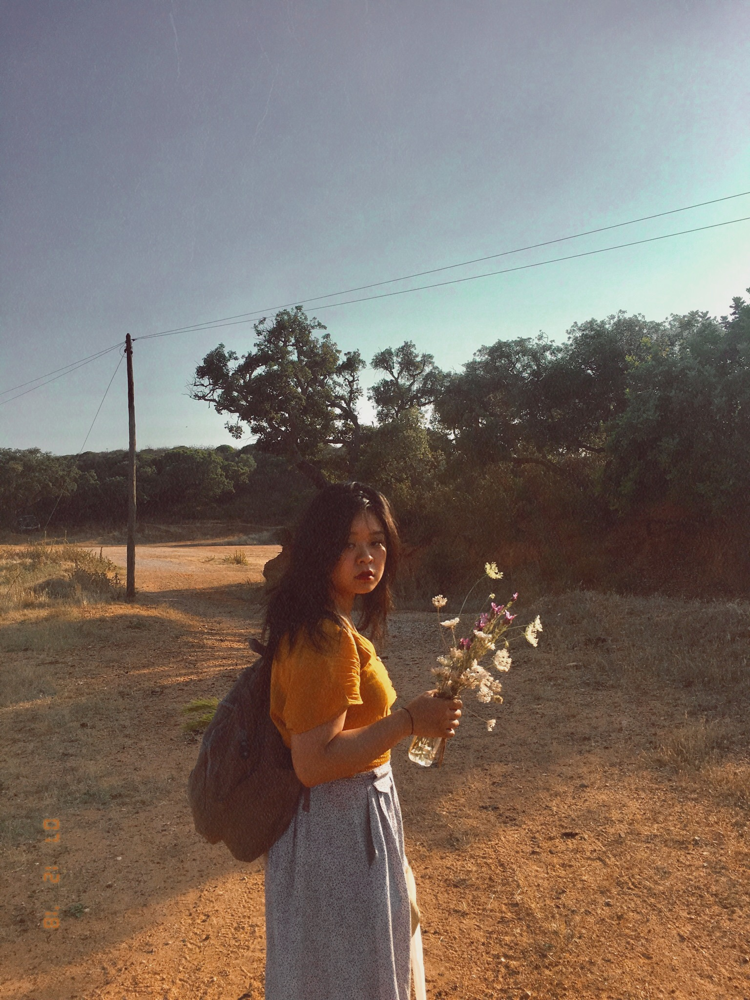
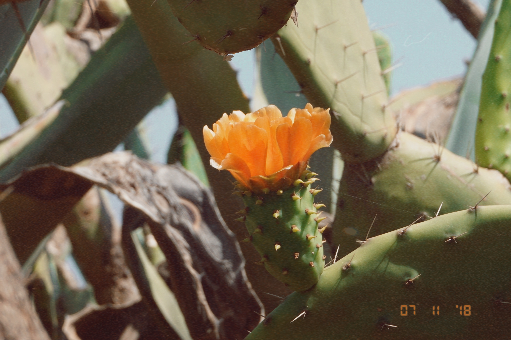
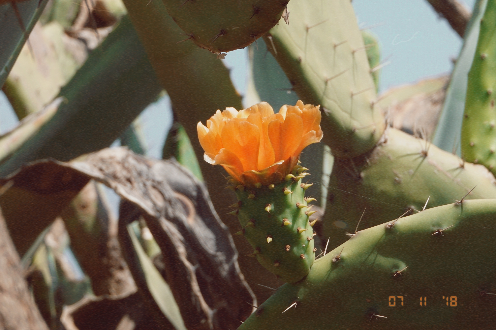

In my spare time, I like to play with flowers and channel my inner National Geographic photographer with an iPhone.
The flowers.
For my part-time job, I'm also a floral designer at Celsia! ☺
My work ranges from everyday bouquets to event design, where I currently specialize in wedding and editorial work.
To be honest, floral design was sort of the first "design-y" thing that set off my design journey, because I was creating a tangible product for a time, space and real people.

My thoughts.
Well, I like flowers because they're pretty and smell good...
Thus here are a couple of interesting articles to help further explain my love for floral design:
Before Emojis, There Was the Secret Language of Flowers
Kind of cool, right?


portugal 2018
barren.
 



portugal 2018 part II.
scenes.


portugal 2018 part III.
photosynthesis.

 
